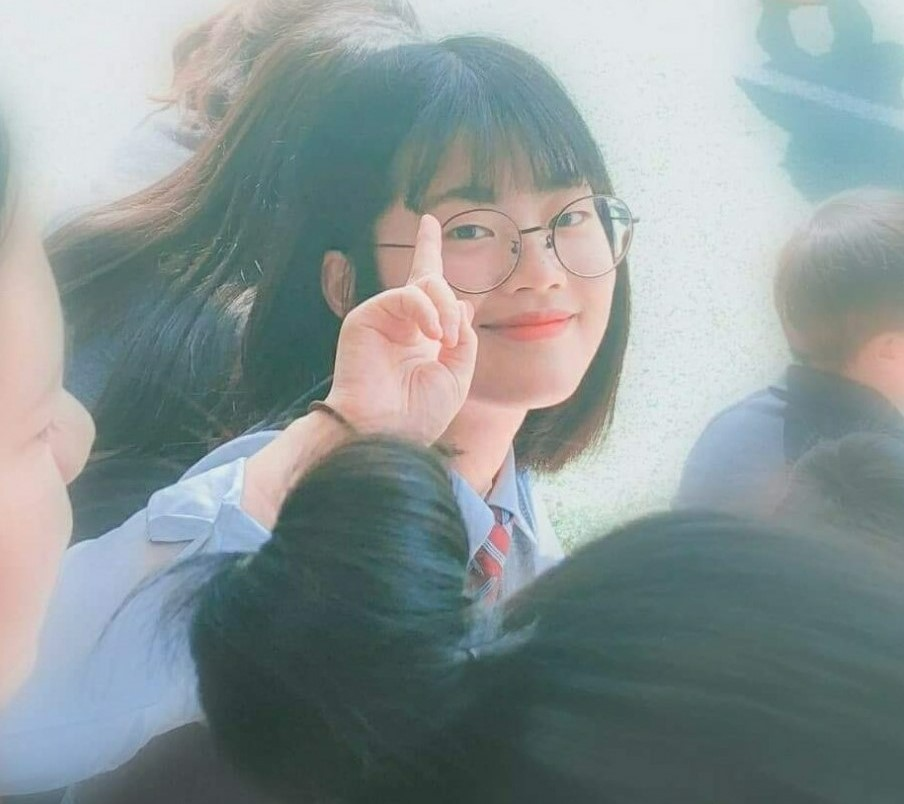

미소의 성장
• 의정부 어린이집
• 경기도 의정부시 의정부동 226 10번지
• 재학 기간: 2006년 1월 ~ 2009년 2월
아픈 이후 무럭무럭 자라나던 강미소는 부모님의 육아휴직이 끝나자
2살 차이의 동생과 함께 어린이집에 가게 되었다. 교회
에서 어린이집, 작은 요양원
까지 모두 운영하는 신기한 곳이었다. 그녀는 굉장히 활발했는데,
어머니의 과일 깎는 모습을 보고 나서다가 손을 크게 다쳤다. 그리고 창고에 있던 세발자전거를
타겠다고 고집을 부리다 자전거를 떨어트려 왼쪽 발등에 흉터가 남았다. 이런 강미소의
모습에서 어머니는 그녀가 아기일 시절 자주 듣던 사내 대장부가 생각났다고 한다. 그리고 그
기질은
초등학교에서 정확히 발현된다...
• 의정부 초등학교
• 경기도 의정부시 동일로522번길 30
• 재학 기간: 2009년 3월 ~ 2015년 2월
행복한 어린이집 생활이 끝나고 강미소는 어머니가 근무하시는 초등학교로
가게 되었다. 어린이집과 거리가 꽤 있는 낯선 동네라 아는 친구들
한 명 없이 혼자 시작하게 되었는데, 다행히 입학 일주일 만에 반
모두와 친구가 되었다. 이 사진은 그녀와

동생들인데, 남동생은 그녀가 7살 때 태어났다. 그리고 초등학교 6년 내내 강미소의 별명은 '조폭 마누라'였다. 짓궂게 구는 남자애들에게 기죽지 않고 더 세게 대들어 사내 같다는 말이 결국 예언이 되어버렸다. 초등학생 주제에 남자친구도 사귀고 사춘기 왔다고 말도 잘 안 듣고 이때가 내 인생의 흑역사라고 할 수 있다.
• 발곡 중학교
• 경기도 의정부시 회룡로 185
• 재학 기간: 2015년 3월 ~ 2018년 2월
강미소는 초 6 때 사춘기를 겪어 중2병은 오지 않았지만
그걸 대체할 많은 사건을 겪게 됐다. 이번에도 마찬가지로
초등학교에서 꽤 떨어진 집 근처의 중학교로 오게 되었다.
1, 2학년 때는 각종 무리의 기 싸움에 치였지만
견뎌내고 나니 정말 좋은 친구들을 만날 수 있었다.
3학년 때는 괜찮은 하루하루를 보냈고
몰래 학교를 빠지기도 해보며 여러 추억을 많이 남겼다.
그렇게 많은 일들을 겪고 올라간 고등학교에서는 더 좋은 일들이 많이 생긴다!!
• 발곡 고등학교
• 경기도 의정부시 동일로 454번길 150
• 재학 기간: 2018년 3월 ~ 2021년 2월
강미소의 신나고 즐거운 학창생활은 고등학교에서부터 진짜 시작된다. 초등학교, 중학교 진학 때와 달리 중학교의 거의 모든 친구들이 같은 고등학교로 왔고, 새로운 친구들도 많이 사귀며 행복한 나날을 보냈다. 점점 커가며 내향적인 성격이 커지던 그녀는 주변의 시선에 민감하게 반응했는데 2학년 때 만난 좋은 친구들과 좋은 선생님 덕분에 자신감을 많이 회복해 학생회도 도전하고, 여러 교내 대회에 출전하거나 동아리 차장도 겸해보며 여러 다양한 경험을 쌓았다. 그녀는 수학을 꽤 하는 편이었는데, 올라간
자신감 덕분에 그 두각이 2학년 때 제대로 나타나기 시작한다. 1학년 때 갈피를 잡기 힘들어 자퇴까지 생각했지만 2학년 때 만난 수많은 과목들에게 매료되어 정말 재밌게, 열심히 공부했다. 하지만 대부분이 그렇듯 성적 앞에서 아쉽게 꿈을 접었고 성적에 맞춰 첫 대학에 가게 되었다. 3년 내내 정말 좋은 기억만 생각 날 정도로 행복했고, 앞으로도 이 기억을 떠올리며 즐겁게 살아갈 수 있을 것 같다. 그녀 인생의 황금기였던 것 같다.